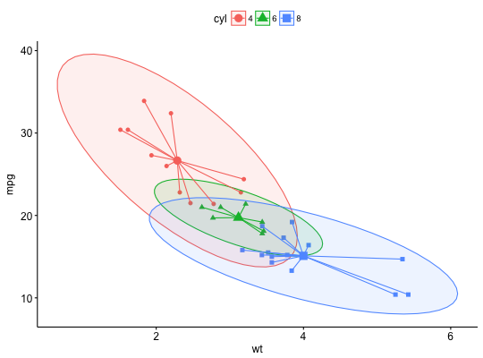

Create a star plot by drawing segments from group centroid to each points.
stat_stars(mapping = NULL, data = NULL, geom = "segment", position = "identity", na.rm = FALSE, show.legend = NA, inherit.aes = TRUE, ...)
aes or
aes_. If specified and inherit.aes = TRUE (the
default), it is combined with the default mapping at the top level of the
plot. You must supply mapping if there is no plot mapping.NULL, the default, the data is inherited from the plot
data as specified in the call to ggplot.
A data.frame, or other object, will override the plot
data. All objects will be fortified to produce a data frame. See
fortify for which variables will be created.
A function will be called with a single argument,
the plot data. The return value must be a data.frame., and
will be used as the layer data.NA, the default, includes if any aesthetics are mapped.
FALSE never includes, and TRUE always includes.FALSE, overrides the default aesthetics,
rather than combining with them. This is most useful for helper functions
that define both data and aesthetics and shouldn't inherit behaviour from
the default plot specification, e.g. borders.geom_segment.# Load data data("mtcars") df <- mtcars df$cyl <- as.factor(df$cyl) # Scatter plot with ellipses and group mean points ggscatter(df, x = "wt", y = "mpg", color = "cyl", shape = "cyl", mean.point = TRUE, ellipse = TRUE)+ stat_stars(aes(color = cyl))